In this example we demonstrate the solution of the 2D linear wave equation – a hyperbolic PDE that involves second time-derivatives. Timestepping of such problems may be performed with timesteppers from the Newmark family. We demonstrate their use and illustrate how to assign the initial conditions.
The example problem
We shall illustrate the timestepping procedures for hyperbolic problems by considering the solution of the 2D linear wave equation in a rectangular domain:
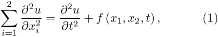 in the rectangular domain 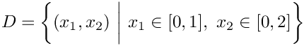, subject to the Dirichlet boundary conditions
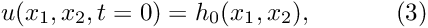 and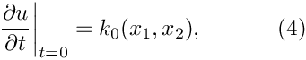 where the functions 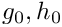 and are given. are given. |
![\[ \left. u\right|_{\partial D}=g_0 \ \ \ \ \ \ \ \ \ \ (2) \]](form_2.png)
Here we consider the unforced case,  , and choose boundary and initial conditions that are consistent with the exact, travelling-wave solution
, and choose boundary and initial conditions that are consistent with the exact, travelling-wave solution
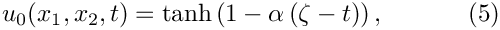
where
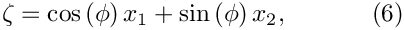
is the travelling-wave coordinate. The solution represents a tanh step profile that propagates with unit speed through the domain. The parameter  controls the steepness of the step while
controls the steepness of the step while  controls the orientation of the step in the 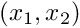 - plane.
controls the orientation of the step in the 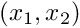 - plane.
The figure below shows a plot of computed and exact solutions at time 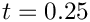, for a steepness parameter 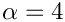, and an angle 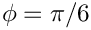 . The plot is a snapshot, taken from the animation of the solution.

Global parameters and functions
As usual, we store the problem parameters in a namespace. Note that we define not only the exact solution but also its first and second time-derivatives, as both are needed to assign the initial conditions for the Newmark timestepper; see Setting the initial conditions for Newmark timesteppers for details.
The driver code
As in most previous time-dependent example codes, we use the command line arguments as flags that indicate if the code is run in validation mode – if command line arguments are specified, the code will only perform a small number of timesteps.
We build the problem with 2D bi-quadratic QLinearWaveElements and a Newmark<1> timestepper (see Setting the initial conditions for Newmark timesteppers for an explanation of the template argument), passing the number of elements, and the pointer to the source function to the constructor, and run the time time-dependent simulation. We solve the problem twice, once with an impulsive start and once a with "smooth" start from the travelling-wave solution (5).
The problem class
The problem class is practically identical to that used for the corresponding unsteady heat problem. No actions are required before or after the solve but the time-dependent boundary conditions must be updated before every timestep.
The problem constructor
The problem constructor is also fairly standard: We start by creating the timestepper (of the type specified by the template argument), pass it to the Problem's collection of timesteppers, and initialise the parameters for the exact solution.
Next, we build the mesh and pin the nodal values on the Dirichlet boundaries (i.e. at all boundary nodes). Recall that the pointer to the timestepper must be passed the mesh constructor to allow the creation of Nodes that provide sufficient storage for the "history values" required by the timestepper.
Finally, we complete the build of the elements by passing the pointer to the source function to the elements, and set up the equation numbering scheme.
Setting the initial conditions for Newmark timesteppers
Most of the code discussed so far was (and most of what follows is) practically identical to that in the corresponding unsteady heat example. The main difference between the two example codes is the way in which the initial conditions are applied. This is closely related to the different role of the "history values" in BDF and Newmark timestepping schemes:
The interpretation of history values in BDF and Newmark timesteppers
In problems in which first time-derivatives are discretised by BDF timesteppers, the "history values" represent the values of the solution at previous timesteps, i.e. for a Data object that is associated with a timestepper from the BDF family, Data::value(t,i) returns the i-th value stored in the Data object, at the t-th previous timestep. We recall that when assigning initial conditions for computations with higher-order timesteppers from the BDF family, the number of (mathematical) initial conditions (the solution at the intial time,  , say) is smaller than the number of "history values" required by the timestepper. For instance, a computation with a
, say) is smaller than the number of "history values" required by the timestepper. For instance, a computation with a BDF<2> timestepper and a timestep dt not only requires the solution at but also the solution at 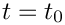 . In most of our examples, this did not cause any problems. We either started the simulation with an "impulsive start" by setting all history values to the solution at , or we assigned the history values from an explicitly-given function (usually an exact solution of the governing equations), in which case the evaluation of the history values at previous timesteps was trivial.
Timesteppers from the Newmark family compute second-order accurate approximations for the first and second time-derivatives of the values stored in an associated Data object. Newmark timesteppers are implicit, single-step schemes since the approximation of the time-derivatives only involves quantities evaluated at the current time (where the solution is unknown) and at a single previous timestep. To facilitate their application in multiphysics problems where parts of a Problem might be discretised by timesteppers from the BDF family, say, Newmark timesteppers can allocate additional storage for the solution at the previous NSTEPS timesteps. These history values are stored in the Data objects and are updated by the timestepper when the solution is advanced to the next time level, but they are not used in the computation of the time-derivatives.
For a Data object that is associated with a Newmark<NSTEPS> timestepper, the history value obtained from Data::value(t,i) may be interpreted as follows:
- t=0: The i-th value at at present time,
Time_pt->time() - t=1: The i-th value at the previous timestep,
Time_pt->time()-dt - ...
- t=NSTEPS: The i-th value at the NSTEPS-th previous timestep, i.e. at
Time_pt->time()-NSTEPS*dtif the timestep dt was kept constant. - t=NSTEPS+1: The 1st time derivative (= "the velocity") of the i-th value at the previous timestep,
Time_pt->time()-dt - t=NSTEPS+2: The 2nd time derivative (= "the acceleration") of the i-th value at the previous timestep,
Time_pt->time()-dt.
The Newmark<1> timestepper is equivalent to the classical Newmark scheme.
Assigning the history values for Newmark timesteppers
The Newmark timestepper provides a number of helper functions that facilitate the assignment of "history values".
- Impulsive starts:
Given a pointer,data_pt, to aDataobject, the functionNewmark<NSTEPS>::assign_initial_values_impulsive(data_pt)assigns history values that are consistent with an impulsive start from theDataobject's current values. - "Smooth" starts from explicitly given time-histories:
If the solution 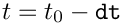 and its first and second time-derivatives are available analytically for 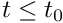, the functionNewmark<NSTEPS>::assign_initial_data_values(...)may be used to assign history values that are consistent
with this time history. Note that, as in the case of the higher-orderBDFtimesteppers, we require more information than is provided by the (mathematical) initial conditions which only provide the value and the first time-derivative of the unknown function at the initial time.
Implementation in the demo code
The function set_initial_condition() demonstrates the use of these functions in our example problem. The assignment of the "history values" for the nodal Data is handled by the timestepper, a pointer to which can be obtained from the Problem:
To start the simulation with an impulsive start from the travelling-wave solution, defined in the namespace TanhSolnForLinearWave, we loop over all nodes and determine their positions. We then compute the value of the exact solution at that point and assign it to the current nodal value. "History values" that correspond to an impulsive start from this value are then assigned by calling Newmark<NSTEPS>::assign_initial_values_impulsive(...).
To start the simulation with a "smooth" start from the travelling-wave solution we have to pass function pointers to the functions that specify the function and its first and second time-derivatives to Newmark<NSTEPS>::assign_initial_data_values(...). As usual, the required form of the function pointer is defined as a public typedef in the Newmark class. Since Data objects can store multiple values, each of which will generally have a different time-history, Newmark<NSTEPS>::assign_initial_data_values(...) expects a vector of function pointers. In the current example where each node only stores a single value, these vectors only have a single entry.
Now we loop over all nodes and pass the vectors of function pointers
to Newmark<NSTEPS>::assign_initial_data_values(...) to assign the required history values.
To check/demonstrate that the assignment of the initial condition was successful, we compare the Newmark approximation for the zero-th, first and second time-derivatives of the nodal values against the exact solution and document the maximum discrepancy.
Post processing
The post-processing routine is practically identical to that in the corresponding unsteady heat example. We output the solution, and compare the computed and exact solutions.
The timestepping loop
Timestepping the linear wave equation involves exactly the same steps as in the unsteady heat example: We start by creating a DocInfo object to specify the output directories and open the trace file in which we record the time-evolution of the error.
We then initialise the time, set the initial condition and output the initial solution.
Next we set up the number of timesteps to be performed. If the code is run in validation mode, indicated by a non-zero number of command line arguments, we only perform two timesteps.
Finally, we loop over the timesteps, solve the equations at each time level and document the results.
Comments and Exercises
Default parameters for the linear wave equations
The linear wave equation does not contain any parameters, therefore the Problem constructor only passed the pointer to the pointer to the source function to the elements. Passing the pointer to the source function is optional – if no source function pointer is specified, the linear-wave elements will use the default 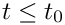 , so that the unforced linear wave equation is solved. You should confirm this by commenting out the assignment of the source function pointer in the Problem constructor – the code should (and does!) still compute the correct results. This is because the travelling-wave solution (5) is in fact a solution of the unforced wave equation – the source function defined in the namespace TanhSolnForLinearWave implements .
The errors induced by an impulsive start
- View the animation of the results obtained from the simulation that was started impulsively and explain how the differences to the exact solution arise.
- Does the error induced by the impulsive start decay with time? Contrast this with the behaviour in the unsteady heat example.
The use of Neumann boundary conditions.
Neumann ("flux") boundary conditions for the linear wave equation can be applied by attaching elements of type LinearWaveFluxElement<BULK_LINEAR_WAVE_ELEMENT> to the boundary in exactly the same way as in the Poisson and unsteady heat examples. We will therefore not discuss this case in detail but simply refer to the listing of the (well-documented) driver code two_d_linear_wave_flux.cc
Source files for this tutorial
- The source files for this tutorial are located in the directory:
demo_drivers/linear_wave/two_d_linear_wave/ - The driver code is:
demo_drivers/linear_wave/two_d_linear_wave/two_d_linear_wave.cc
PDF file
A pdf version of this document is available.